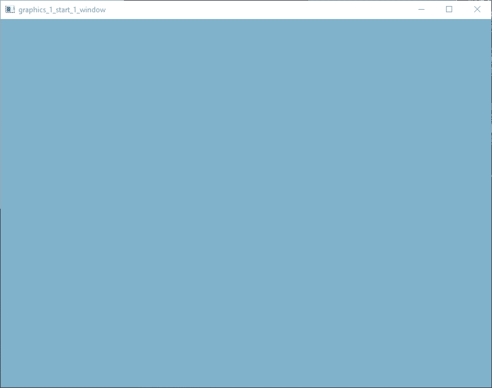

result

source
/*
* 1_1_window.c
* Another Memory Ends - amedevcentral@gmail.com
* Copyright
* based on LearnOpenGL https://learnopengl.com/Getting-started/Hello-Window
* by Joey de Vries https://twitter.com/JoeyDeVriez
* license https://creativecommons.org/licenses/by-nc/4.0/legalcode
*/
#include "framework.h"
const size_t gc_core_memory_size = 0;
void resize_callback(AmeWindow* window, uint width, uint height);
void input_callback(AmeWindow* window, const InputEvent* event);
int main(int argc, char** argv)
{
(void)argc;
(void)argv;
f_initialize(C_OUTPUT_FULL, 0);
AmeWindow *window = f_window_create("graphics_1_start_1_window", 800, 600, WINDOW_STYLE_DEFAULT);
f_window_set_input_callback(window, input_callback);
f_window_set_resize_callback(window, resize_callback);
f_window_set_current(window);
ColorVec4 clear_color = { 0.5f, 0.7f, 0.8f, 1.0f };
gfx_clear_color_set(clear_color);
while (f_window_should_close(window) == false)
{
f_window_process_messages(window);
gfx_clear(true, false, false);
f_window_swap_buffers(window);
}
f_window_delete(window);
f_terminate();
return 0;
}
void resize_callback(AmeWindow* window, uint width, uint height)
{
if (gfx_context_get() == f_window_context(window))
{
gfx_viewport_set_values(0, 0, width, height);
}
}
void input_callback(AmeWindow* window, const InputEvent* event)
{
switch (event->type)
{
case INPUT_EVENT_KEYBOARD_KEY_DOWN:
if (f_input_event_key(event) == VIRTUAL_KEY_ESC)
f_window_send_close(window);
default:
break;
}
}